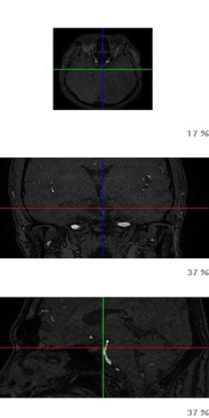
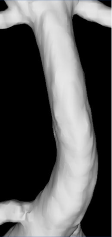
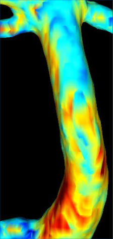
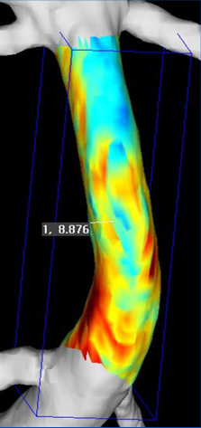

혈관 구조 정보
3차원 혈관 영상과 관심 영역을 통해 분석 대상 혈관의 위치와 형태를 확인합니다.
NeuFlow는 TOF-MRA 영상에서 뇌혈관의 구조와 혈류 관련 특성을 분석하는 의료기기 소프트웨어입니다. 기존 영상에 담긴 정보를 3차원 혈관 영상과 SIG 정량정보로 제시해, 의료진이 뇌졸중 위험을 살펴보도록 돕습니다.
NeuFlow는 TOF-MRA 영상의 혈관 경계 부근에서 나타나는 신호(SIG, Signal Intensity Gradient) 변화를 분석해 혈관별 정량정보를 얻습니다. SIG는 혈관벽전단응력과 관련된 혈류역학적 특성을 이해하는 대리지표로 연구되어 왔습니다.


분석에 적합한 기존 촬영 영상을 사용합니다.
3차원 혈관 정보를 구성해 혈관의 위치와 형태를 확인합니다.
혈관 경계 부근의 신호 변화를 분석해 혈관별 정량정보를 얻습니다.
관심 영역의 SIG를 정량화합니다.
혈관 정보와 정량정보를 보고서로 확인하고, 의료진이 임상 정보와 함께 해석합니다.





SIG 수치와 그 임상적 해석을 한 보고서에서 확인합니다.
3차원 혈관 영상과 관심 영역을 통해 분석 대상 혈관의 위치와 형태를 확인합니다.

혈관별 SIG와 관심 영역의 정량정보를 확인합니다. 혈관의 형태와 혈류 관련 수치를 함께 살펴봅니다.

SIG 기반 정보와 급성 뇌졸중의 연관성을 바탕으로 한 해석 정보를 정량분석 결과와 함께 제시합니다.

보고서 결과를 증상, 병력, 혈압·혈당 등 위험요인과 다른 검사 결과에 비추어 검토합니다.

정량값의 임상적 의미를 함께 검토하고, 환자에게 설명할 내용을 하나의 자료로 구체화합니다.

자신의 뇌혈관 영상과 SIG 정량정보를 살펴보고, 수치의 의미를 담당 의료진의 설명으로 확인합니다.
혈관 경계의
신호 변화를
위험신호로.


MRA의 PET을 보는 것 같습니다. 컬러로 보는 즉시 확인이 되고 확신이 섭니다.
이제 뇌혈관을 컬러와 숫자로 볼 수 있습니다.
뉴플로우로 판독한다는 소문을 듣고 환자분들이 먼저 찾아오십니다.
모야모야병, 뇌경색, 뇌동맥류, 소혈관질환. SIG는 혈류역학적 특성을 이해하는 대리지표로 연구되어 왔습니다.
NeuFlow는 분석에 적합한 기존 TOF-MRA 영상을 활용하는 방식입니다. 실제 분석 가능 여부는 촬영 조건과 영상 품질, 의료기관의 운영 방식에 따라 확인이 필요합니다.
NeuFlow는 SIG 기반 정량정보와 뇌졸중 위험신호의 해석을 하나의 보고서로 담아 제공합니다. 분석 수치와 그 임상적 의미를 함께 살펴보고, 참고할 수 있습니다.
보고서는 관련 정보를 검토하고 설명하는 데 활용하는 자료입니다. 개인의 상태는 의료진이 증상, 병력, 위험요인과 다른 검사 결과를 함께 고려해 판단합니다.
위 내용은 뇌졸중 위험신호 분석의 적용 방향입니다. 실제 제품 화면이나 확정된 제공 항목을 의미하지 않으며, 보고서에 반영되는 항목은 연구 결과와 제품화 과정에 따라 달라질 수 있습니다.
“기존 방식으로 해결할 수 없다면, 새로운 길을 만들어야 한다.” 2010년 시작된 연구, 200번이 넘는 반복 끝에 TOF-MRA 속에 숨어 있던 신호를 찾아냈습니다.